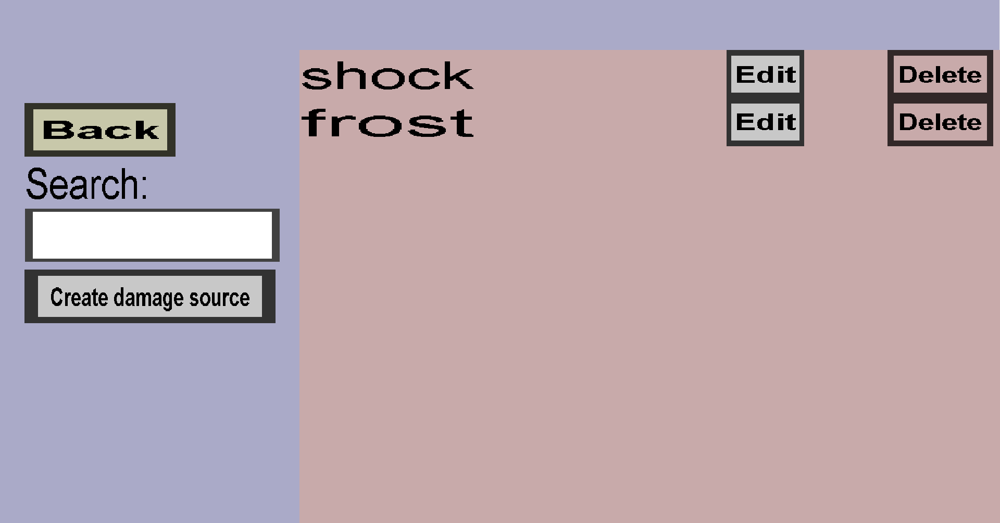

The custom damage source overview shows a list of all custom damage sources. You can create custom armor that is strong or weak against specific custom damage sources, and you can configure custom items to deal such custom damage. If you have shock and frost custom damage sources, it should look like this:
The custom chestplate would reduce the damage dealt by the custom sword with 50%, but it would be completely useless against any other weapon (since the chestplate gives 0 armor). The custom sword would be quite powerful (5 hearts of damage, which is more than a diamond sword) against anyone who does not wear the custom chestplate, but it would be rather ineffective against players who do equip the custom chestplate.